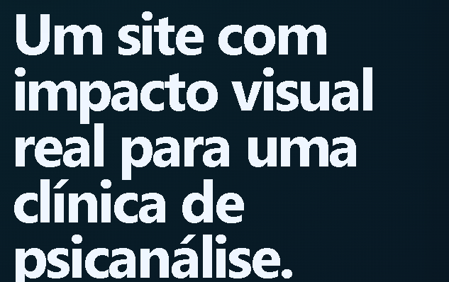

Psicanálise com profundidade, escuta e seriedade.
Atendimento clínico 100% online com foco real no sujeito.
Agendar pelo WhatsApp
Atendimento clínico 100% online com foco real no sujeito.
Agendar pelo WhatsAppA psicanálise é uma prática clínica que investiga o inconsciente, conflitos e padrões emocionais.
Psicanalista com foco em escuta profunda, acolhimento e transformação emocional.